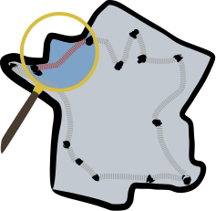
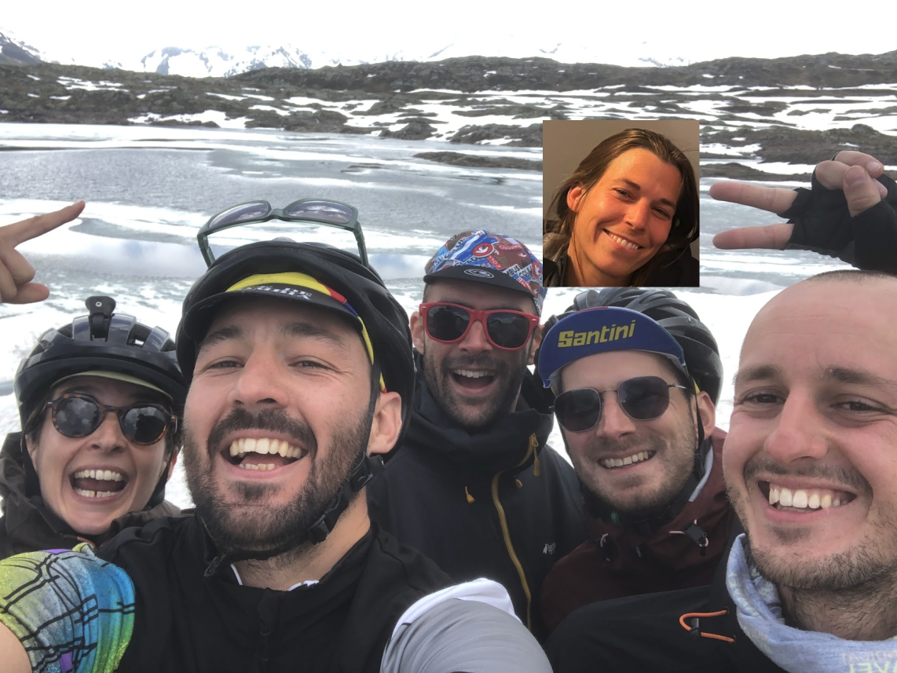

Événement gratuit, ouvert à tous, sans niveau requis, chacun·e profite du voyage à son rythme et on se retrouve chaque matin et chaque soir pour un moment convivial.
Notre rôle : vous mettre à disposition une belle trace pour relier Paimpol à Rouen en 8 jours avec les points d’intérêts à ne pas louper pour remplir vos estomacs et découvrir du pays.
Le programme jour par jour
Restez au courant des dernières informations sur la Cyclotourix
L’événement est gratuit. L’inscription comprend juste les traces et le fait de rouler avec des gens sympas, et c’est déjà pas mal :)
On prévoit de faire environ 80km par jour avec un dénivelé raisonnable (500-1000m par jour). Pour celleux qui le souhaitent, on proposera aussi des petits détours qui rallongent la trace et permettent de découvrir encore plus de spécialités locales.
Peu importe (peut-être pas un BMX). On fera exclusivement de la route ou du chemin tranquille donc votre vélo quotidien ou de voyage fera très probablement l’affaire. De notre côté on sera en VTC, randonneuse, vélo de voyage ou gravel.
On prévoit de dormir en camping chaque soir, on organisera ça en les prévenant en amont en fonction du nombre de participants. Si vous voulez vous organiser de votre côté pour dormir en gîte ou en hôtel pas de soucis évidemment.
On se retrouve chaque matin pour un petit café et présentation de la journée. Pendant la journée on vous recommandera les bons spots pour manger, visiter, acheter des spécialités locales, faire des photos... Et le soir pour celleux qui le souhaitent on dîne ensemble et petite soirée tranquille.
Non, c’est à la carte, vous pouvez nous rejoindre sur la totalité du trajet ou seulement sur certaines journées.
Tant mieux ! On organise la Cyclotourix aussi pour démocratiser à notre petite échelle le voyage à vélo et vous aider à sauter le pas.
On est 6 potes qui faisons du vélo plus ou moins souvent, plus ou moins sportivement. On aime bien se retrouver régulièrement pour faire des weekends ou des voyages un peu plus longs à vélo. Nous on trouve qu’on est hyper sympas, vous nous direz ce que vous en pensez.

Notre objectif est de relier toutes les villes du Tour de Gaule d’Asterix en vélo. On ne sait pas encore trop quand auront lieu les prochaines étapes, on pense en faire 1 à 2 par an a priori, on vous tiendra au courant. Si vous voulez en savoir plus sur le projet c’est par ici.